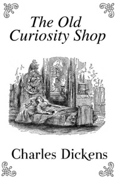

The Old Curiosity Shop tells the story of Nell Trent, a beautiful and virtuous young girl of "not quite fourteen". An orphan, she lives with her maternal grandfather (whose name is never revealed) in his shop of odds and ends. Her grandfather loves her dearly, and Nell does not complain, but she lives a lonely existence with almost no friends her own age. Her only friend is Kit, an honest boy employed at the shop, whom she is teaching to write. Secretly obsessed with ensuring that Nell does not die in poverty as her parents did, her grandfather attempts to provide Nell with a good inheritance through gambling at cards. He keeps his nocturnal games a secret, but borrows heavily from the evil Daniel Quilp, a malicious, grotesquely deformed, hunchbacked dwarf moneylender. In the end, he gambles away what little money they have, and Quilp seizes the opportunity to take possession of the shop and evict Nell and her grandfather. Her grandfather suffers a breakdown that leaves him bereft of his wits, and Nell takes him away to the Midlands of England, to live as beggars.
Convinced that the old man has stored up a large and prosperous fortune for Nell, her wastrel older brother, Frederick, convinces the good-natured but easily led Dick Swiveller to help him track Nell down, so that Swiveller can marry Nell and share her supposed inheritance with Frederick. To this end, they join forces with Quilp, who knows full well that there is no fortune, but sadistically chooses to 'help' them to enjoy the misery it will inflict on all concerned. Quilp begins to try to track Nell down, but the fugitives are not easily discovered. To keep Dick Swiveller under his eye, Quilp arranges for him to be taken as a clerk by Quilp's lawyer, Mr. Brass. At the Brass firm, Dick befriends the mistreated maidservant and nicknames her 'the Marchioness'. Nell, having fallen in with a number of characters, some villainous and some kind, succeeds in leading her grandfather to safety in a far-off village (identified by Dickens as Tong, Shropshire), but this comes at a considerable cost to Nell's health.
Meanwhile, Kit, having lost his job at the curiosity shop, has found new employment with the kind Mr and Mrs Garland. Here he is contacted by a mysterious 'single gentleman' who is looking for news of Nell and her grandfather. The 'single gentleman' and Kit's mother go after them unsuccessfully, and encounter Quilp, who is also hunting for the runaways. Quilp forms a grudge against Kit and has him framed as a thief. Kit is sentenced to transportation. However, Dick Swiveller proves Kit's innocence with the help of his friend the Marchioness. Quilp is hunted down and dies trying to escape his pursuers. At the same time, a coincidence leads Mr Garland to knowledge of Nell's whereabouts, and he, Kit, and the single gentleman (who turns out to be the younger brother of Nell's grandfather) go to find her. Sadly, by the time they arrive, Nell has died as a result of her arduous journey. Her grandfather, already mentally infirm, refuses to admit she is dead and sits every day by her grave waiting for her to come back until, a few months later, he dies himself.
1911 - The Old Curiosity Shop, American silent short drama film produced by the Thanhouser Company.
1914 - The Old Curiosity Shop, first of two silent film adaptations directed by Thomas Bentley.
1916 - Nelly, an opera based on the novel, by Italian composer Lamberto Landi, was composed in 1916; it premiered in Lucca in 1947.
1921 - The Old Curiosity Shop, second of two silent film adaptations directed by Thomas Bentley.
1934 - The Old Curiosity Shop, the first talkie version was a British film, again directed by Thomas Bentley, starring Hay Petrie as Quilp.
1962 - The Old Curiosity Shop, a BBC television adaptation by Joan Craft and Constance Cox starring Patrick Troughton.
1975 - Mr Quilp, a British musical version of The Old Curiosity Shop (titled Mr. Quilp in the United States) directed by Michael Tuchner and starring Anthony Newley, David Hemmings, Michael Hordern and Jill Bennett. The filmmakers were hoping to cash in on the recent success of Oliver!, also based on a Dickens classic, but the film was notably unsuccessful.
1979 - The Old Curiosity Shop, a nine-part BBC miniseries later released on DVD. There was no Frederick character and the story ends with the Grandfather mourning at Nell's grave.
1990 - The Old Curiosity Shop, an adaptation for BBC Radio 4 was narrated by Alex Jennings, with Emily Chenery (Nell), Phil Daniels (Quilp), Daniel Bliss (Kit), Trevor Peacock (Grandfather), Clive Swift, Anna Massey and Julia McKenzie.
1995 - The Old Curiosity Shop, a Disney made-for-television film adaptation with Tom Courtenay (Quilp), Peter Ustinov (Grandfather) and Sally Walsh (Nell).
1998 - The Old Curiosity Shop, a second BBC Radio 4 adaptation. This production starred Tom Courtenay as Quilp, Denis Quilley, Michael Maloney and Teresa Gallagher.
2007 - The Old Curiosity Shop, an ITV television adaptation broadcast starring Derek Jacobi, Toby Jones, Sophie Vavasseur and Zoë Wanamaker.
2015 - Dickensian, BBC's 2015 Christmas drama, which brings together many of Dickens' iconic characters in one story with Nell and her grandfather featured prominently.